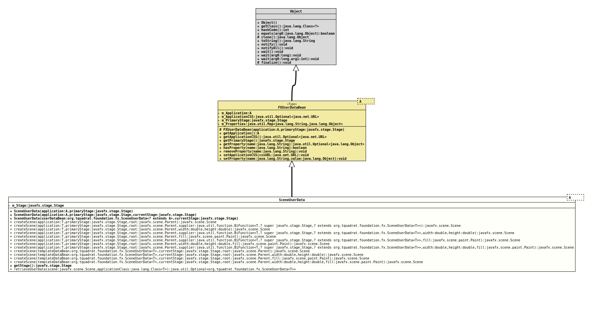

Module org.tquadrat.foundation.fx
Package org.tquadrat.foundation.fx
Class SceneUserData<A extends Application>
java.lang.Object
org.tquadrat.foundation.fx.internal.FXUserDataBean<A>
org.tquadrat.foundation.fx.SceneUserData<A>
- Type Parameters:
A- The class of the JavaFX application.
@ClassVersion(sourceVersion="$Id: SceneUserData.java 1092 2024-02-01 22:49:38Z tquadrat $")
@API(status=STABLE,
since="0.1.0")
public non-sealed class SceneUserData<A extends Application>
extends FXUserDataBean<A>
The user data bean for instances of
Scene.
A JavaFX Scene instance allows that arbitrary user data can be
attached to it, using the method
Scene.setUserData(Object).
This class provides an extensible container for this kind of data.
Through the methods
it is already possible to store any type of data into the user data bean, but it can be easily extended for additional functionality.
createScene() Factory Methods
The methods
createScene(Application, Stage, Parent)createScene(Application, Stage, Parent, Paint)createScene(Application, Stage, Parent, double, double)createScene(Application, Stage, Parent, double, double, Paint)createScene(SceneUserData, Stage, Parent)createScene(SceneUserData, Stage, Parent, Paint)createScene(SceneUserData, Stage, Parent, double, double)createScene(SceneUserData, Stage, Parent, double, double, Paint)createScene(Application, Stage, Parent, BiFunction)createScene(Application, Stage, Parent, BiFunction, Paint)createScene(Application, Stage, Parent, BiFunction, double, double)createScene(Application, Stage, Parent, BiFunction, double, double, Paint)
can be used to create a
Scene
instance together with the user data. Those of the factory methods that do
not have a supplier argument will use an instance of
SceneUserData (this class); if you want to use an instance of a
derived class, you have to implement the respective supplier and use one of
the methods that take it.
- Author:
- Thomas Thrien (thomas.thrien@tquadrat.org)
- Version:
- $Id: SceneUserData.java 1092 2024-02-01 22:49:38Z tquadrat $
- Since:
- 0.1.0
- UML Diagram
-

UML Diagram for "org.tquadrat.foundation.fx.SceneUserData"
{kind=link}
-
Field Summary
Fields -
Constructor Summary
ConstructorsConstructorDescriptionSceneUserData(A application, Stage primaryStage) Creates a newSceneUserDatainstance.SceneUserData(A application, Stage primaryStage, Stage currentStage) Creates a newSceneUserDatainstance.SceneUserData(SceneUserData<? extends A> userDataBean, Stage currentStage) Creates a newSceneUserDatainstance and copies the references for the application, the primary and the current stage from the given user data bean (usually that from the application's main scene). -
Method Summary
Modifier and TypeMethodDescriptionstatic final <T extends Application>
ScenecreateScene(SceneUserData<T> templateDataBean, Stage currentStage, Parent root) static final <T extends Application>
ScenecreateScene(SceneUserData<T> templateDataBean, Stage currentStage, Parent root, double width, double height) static final <T extends Application>
ScenecreateScene(SceneUserData<T> templateDataBean, Stage currentStage, Parent root, double width, double height, Paint fill) static final <T extends Application>
ScenecreateScene(SceneUserData<T> templateDataBean, Stage currentStage, Parent root, Paint fill) static final <T extends Application>
ScenecreateScene(T application, Stage primaryStage, Parent root) static final <T extends Application>
ScenecreateScene(T application, Stage primaryStage, Parent root, double width, double height) static final <T extends Application>
ScenecreateScene(T application, Stage primaryStage, Parent root, double width, double height, Paint fill) static final <T extends Application>
ScenecreateScene(T application, Stage primaryStage, Parent root, BiFunction<T, ? super Stage, ? extends SceneUserData<T>> supplier) static final <T extends Application>
ScenecreateScene(T application, Stage primaryStage, Parent root, BiFunction<T, ? super Stage, ? extends SceneUserData<T>> supplier, double width, double height) static final <T extends Application>
ScenecreateScene(T application, Stage primaryStage, Parent root, BiFunction<T, ? super Stage, ? extends SceneUserData<T>> supplier, double width, double height, Paint fill) static final <T extends Application>
ScenecreateScene(T application, Stage primaryStage, Parent root, BiFunction<T, ? super Stage, ? extends SceneUserData<T>> supplier, Paint fill) static final <T extends Application>
ScenecreateScene(T application, Stage primaryStage, Parent root, Paint fill) final StagegetStage()Returns the stage for the current scene.static final <T extends Application>
Optional<SceneUserData<T>> retrieveUserData(Scene scene, Class<T> applicationClass) Retrieves the user data from the given instance ofScene.Methods inherited from class org.tquadrat.foundation.fx.internal.FXUserDataBean
getApplication, getApplicationCSS, getPrimaryStage, getProperty, hasProperty, removeProperty, setApplicationCSS, setProperty
-
Field Details
-
m_Stage
The stage for this scene; this can be the same as the primary stage in cases where this scene is that for the application's main window.
-
-
Constructor Details
-
SceneUserData
Creates a newSceneUserDatainstance.- Parameters:
application- The reference for the application's main class.primaryStage- The reference for the application's primary stage.
-
SceneUserData
Creates a newSceneUserDatainstance.- Parameters:
application- The reference for the application's main class.primaryStage- The reference for the application's primary stage.currentStage- The reference to the stage for this scene.
-
SceneUserData
Creates a newSceneUserDatainstance and copies the references for the application, the primary and the current stage from the given user data bean (usually that from the application's main scene).- Parameters:
userDataBean- The template user data bean.currentStage- The reference to the stage for this scene.
-
-
Method Details
-
createScene
@API(status=STABLE, since="0.1.0") public static final <T extends Application> Scene createScene(T application, Stage primaryStage, Parent root) - Type Parameters:
T- The type of the application's main class.- Parameters:
application- The reference for the application's main class.primaryStage- The reference for the application's primary stage.root- The root node of the scene graph.- Returns:
- The new scene instance.
-
createScene
@API(status=STABLE, since="0.1.0") public static final <T extends Application> Scene createScene(T application, Stage primaryStage, Parent root, BiFunction<T, ? super Stage, ? extends SceneUserData<T>> supplier) - Type Parameters:
T- The type of the application's main class.- Parameters:
application- The reference for the application's main class.primaryStage- The reference for the application's primary stage.root- The root node of the scene graph.supplier- The supplier for theSceneUserDatainstance.- Returns:
- The new scene instance.
-
createScene
@API(status=STABLE, since="0.1.0") public static final <T extends Application> Scene createScene(T application, Stage primaryStage, Parent root, double width, double height) - Type Parameters:
T- The type of the application's main class.- Parameters:
application- The reference for the application's main class.primaryStage- The reference for the application's primary stage.root- The root node of the scene graph.width- The width of the scene.height- The height of the scene.- Returns:
- The new scene instance.
-
createScene
@API(status=STABLE, since="0.1.0") public static final <T extends Application> Scene createScene(T application, Stage primaryStage, Parent root, BiFunction<T, ? super Stage, ? extends SceneUserData<T>> supplier, double width, double height) - Type Parameters:
T- The type of the application's main class.- Parameters:
application- The reference for the application's main class.primaryStage- The reference for the application's primary stage.root- The root node of the scene graph.supplier- The supplier for theSceneUserDatainstance.width- The width of the scene.height- The height of the scene.- Returns:
- The new scene instance.
-
createScene
@API(status=STABLE, since="0.1.0") public static final <T extends Application> Scene createScene(T application, Stage primaryStage, Parent root, Paint fill) - Type Parameters:
T- The type of the application's main class.- Parameters:
application- The reference for the application's main class.primaryStage- The reference for the application's primary stage.root- The root node of the scene graph.fill- The fill.- Returns:
- The new scene instance.
-
createScene
@API(status=STABLE, since="0.1.0") public static final <T extends Application> Scene createScene(T application, Stage primaryStage, Parent root, BiFunction<T, ? super Stage, ? extends SceneUserData<T>> supplier, Paint fill) - Type Parameters:
T- The type of the application's main class.- Parameters:
application- The reference for the application's main class.primaryStage- The reference for the application's primary stage.root- The root node of the scene graph.supplier- The supplier for theSceneUserDatainstance.fill- The fill.- Returns:
- The new scene instance.
-
createScene
@API(status=STABLE, since="0.1.0") public static final <T extends Application> Scene createScene(T application, Stage primaryStage, Parent root, double width, double height, Paint fill) - Type Parameters:
T- The type of the application's main class.- Parameters:
application- The reference for the application's main class.primaryStage- The reference for the application's primary stage.root- The root node of the scene graph.width- The width of the scene.height- The height of the scene.fill- The fill.- Returns:
- The new scene instance.
-
createScene
@API(status=STABLE, since="0.1.0") public static final <T extends Application> Scene createScene(T application, Stage primaryStage, Parent root, BiFunction<T, ? super Stage, ? extends SceneUserData<T>> supplier, double width, double height, Paint fill) - Type Parameters:
T- The type of the application's main class.- Parameters:
application- The reference for the application's main class.primaryStage- The reference for the application's primary stage.root- The root node of the scene graph.supplier- The supplier for theSceneUserDatainstance.width- The width of the scene.height- The height of the scene.fill- The fill.- Returns:
- The new scene instance.
-
createScene
@API(status=STABLE, since="0.1.0") public static final <T extends Application> Scene createScene(SceneUserData<T> templateDataBean, Stage currentStage, Parent root) - Type Parameters:
T- The type of the application's main class.- Parameters:
templateDataBean- The user data from the application's main scene.currentStage- The stage for the current scene.root- The root node of the scene graph.- Returns:
- The new scene instance.
-
createScene
@API(status=STABLE, since="0.1.0") public static final <T extends Application> Scene createScene(SceneUserData<T> templateDataBean, Stage currentStage, Parent root, double width, double height) - Type Parameters:
T- The type of the application's main class.- Parameters:
templateDataBean- The user data from the application's main scene.currentStage- The stage for the current scene.root- The root node of the scene graph.width- The width of the scene.height- The height of the scene.- Returns:
- The new scene instance.
-
createScene
@API(status=STABLE, since="0.1.0") public static final <T extends Application> Scene createScene(SceneUserData<T> templateDataBean, Stage currentStage, Parent root, Paint fill) - Type Parameters:
T- The type of the application's main class.- Parameters:
templateDataBean- The user data from the application's main scene.currentStage- The stage for the current scene.root- The root node of the scene graph.fill- The fill.- Returns:
- The new scene instance.
-
createScene
@API(status=STABLE, since="0.1.0") public static final <T extends Application> Scene createScene(SceneUserData<T> templateDataBean, Stage currentStage, Parent root, double width, double height, Paint fill) - Type Parameters:
T- The type of the application's main class.- Parameters:
templateDataBean- The user data from the application's main scene.currentStage- The stage for the current scene.root- The root node of the scene graph.width- The width of the scene.height- The height of the scene.fill- The fill.- Returns:
- The new scene instance.
-
getStage
Returns the stage for the current scene. If the current scene is the application's main scene, the returned stage is the primary stage, so that in this caseFXUserDataBean.getPrimaryStage()will return the same value as this method.- Returns:
- The stage for the current scene.
-
retrieveUserData
public static final <T extends Application> Optional<SceneUserData<T>> retrieveUserData(Scene scene, Class<T> applicationClass) Retrieves the user data from the given instance ofScene.- Type Parameters:
T- The type of the application's main class.- Parameters:
scene- The scene.applicationClass- The type of the application's main class.- Returns:
- An instance of
Optionalthat holds the user data instance.
-